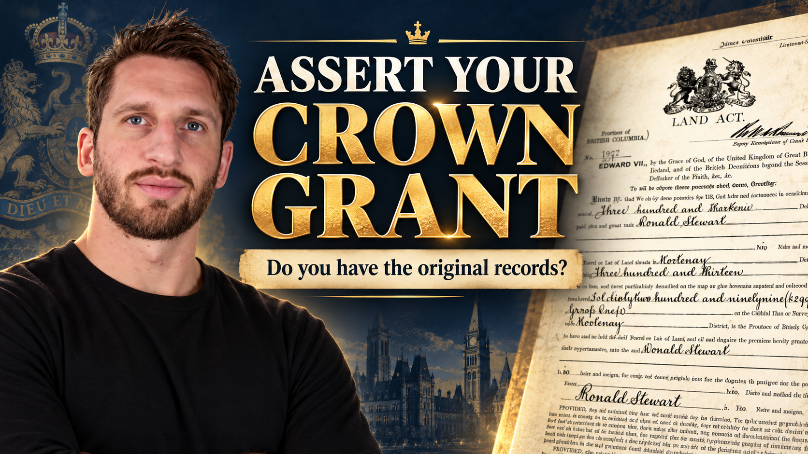

Chain of Title Discovery.
Trace predecessor references through the available property records.
The Guardian of the Record · VSL
A service overview with Mark Smith. Trace the history. Connect the records. Build the evidence.

The written overview
Start with the current Certificate of Title, follow predecessor references, compare survey information and investigate the historical Crown Grant. The available records and agreed scope determine what can be prepared.
You can do the research yourself. The paid package is for owners who want to delegate the research and documentation preparation.
Purchase first, then provide the property intake information and confirm the written scope. You review the resulting file and complete signing, mailing, service or publication as required.
The package
Trace predecessor references through the available property records.
Locate and examine the original grant, its terms, reservations and exceptions.
Review the current record and the survey together, within the agreed scope.
Prepare a working boundary description from available records. This is not a new survey.
Prepare the acceptance documentation described in your written scope.
Prepare the notice documentation in the agreed scope; you complete the required signing, mailing or publication steps.
Subject to available records and written scope. Additional title and survey copies are requested and paid for separately by the client directly from the Land Registry.
A working metes-and-bounds description is not a new professional survey and does not replace a licensed land surveyor. Notice documentation covers the applicable public/private notices in your scope; you complete the required signing, mailing, service and publication.
Bonus · included
Personalized and pre-filled for you.
As a purchaser, you also receive a pre-filled version of the First Nation Proposal Letter introduced in the Crown Grant webinar. Using the information you provide, Mark prepares a practical starting point if you choose to open a dialogue with the applicable First Nation.
A communication and educational document. No response, negotiation, agreement, conveyance of Aboriginal title or particular legal outcome is guaranteed.
The service policy
Cancellation and a refund are available within 14 days of purchase, subject to the written service terms.
Review the written scope, included work, applicable taxes, estimated turnaround, registry-document allowance and full service terms.
No legal outcome is guaranteed. You are purchasing the research and documentation work described in the package and your written scope.
Before you decide
Yes. You can trace title references, obtain the records and prepare your own file. The free webinar gives you the starting points. This package is for owners who prefer to have the research and documentation prepared.
No. Your Certificate of Title is the present registered record. The Crown Grant is a separate historical grant further back in the property's history.
No automatic conclusion should be assumed. The historical grant needs to be understood in context with the property history and applicable law. This service does not promise immunity from government rules.
No. This is not a property-tax elimination or charge-removal service. Registered and legal matters may require separate statutory or court processes and qualified professional advice.
No. No foreclosure or litigation outcome is promised.
No. The package does not extinguish or resolve Aboriginal title. The personalized proposal letter is a starting point for dialogue; no response, agreement or legal result is guaranteed.
No. Mark Smith and Cheq Yourself provide educational research and documentation support. Obtain appropriate professional advice for property-specific legal questions or active court or statutory deadlines.
The standard allowance is five Certificates of Title, one Survey and one Crown Grant, subject to record availability. Additional title and survey copies are requested and paid for separately by the client directly from the Land Registry.
Typical turnaround is 30–90 days after the required information or documents are received and the written scope is confirmed.
Complete the property intake. The written scope and required records are confirmed, then the research and documentation work begins. You are contacted if additional information or records are required. This review page does not itself process intake or verify payment.
Cancellation and a refund are available within 14 days of purchase, subject to the written service terms. Review the included work, taxes, record allowance, turnaround and full terms before paying.
This standalone review page stores no form submissions and has no analytics or trackers. External Stripe and webinar pages have their own privacy practices.
Final Privacy Policy, Terms of Service and monitored contact links must be confirmed before this concept becomes a live sales funnel. The refund summary above comes from the owner-approved service policy; no refund request is processed here.